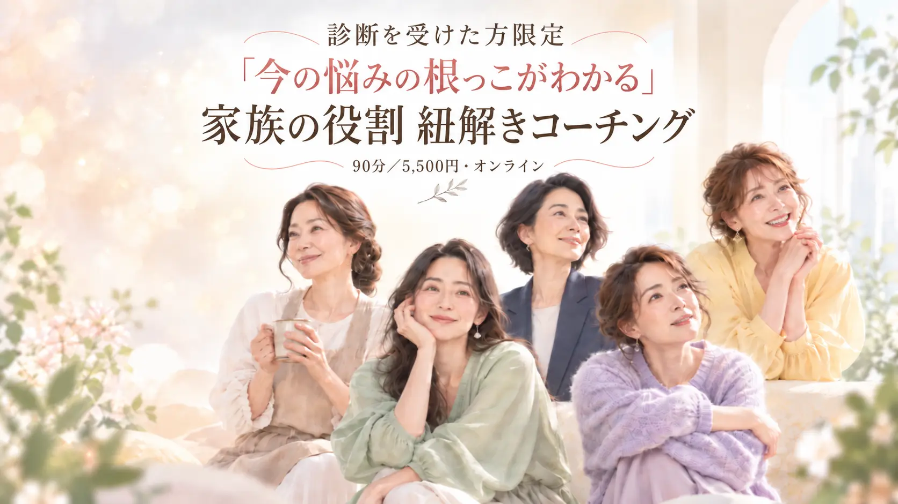
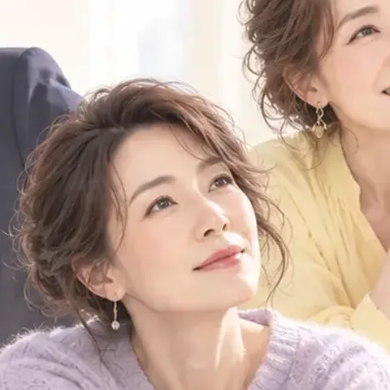
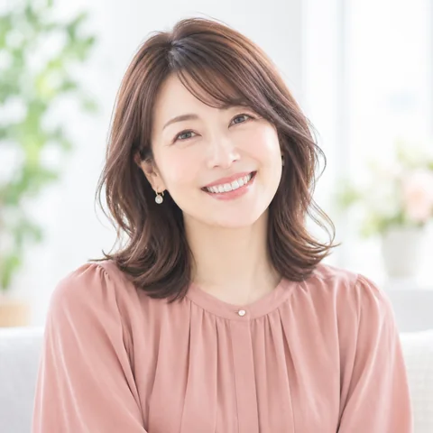
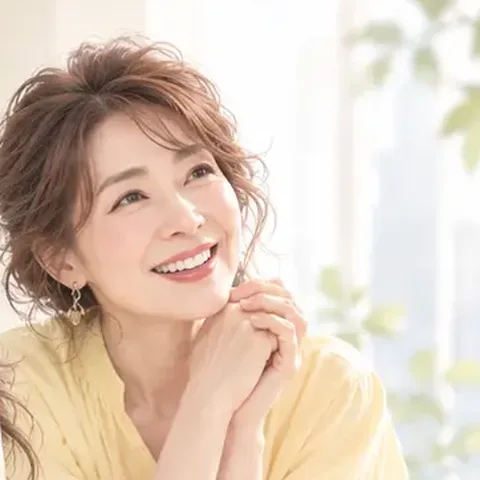
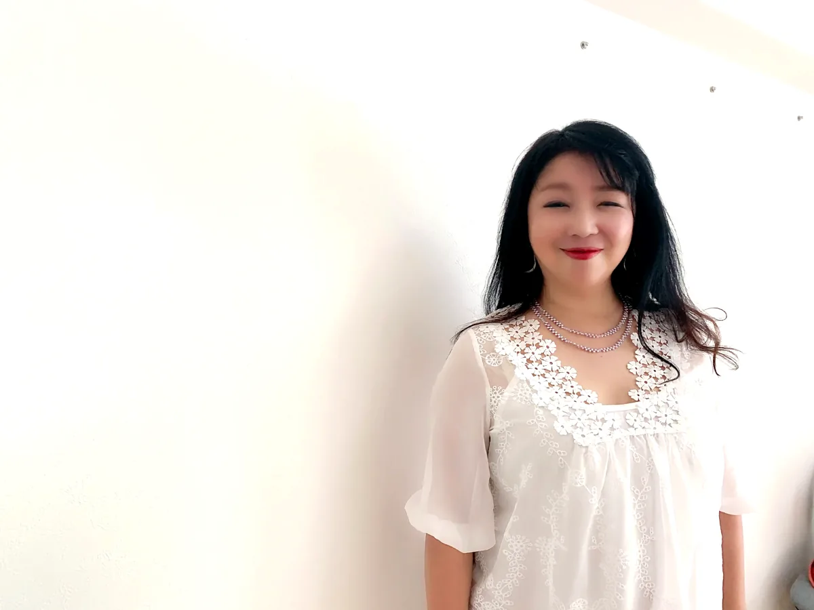
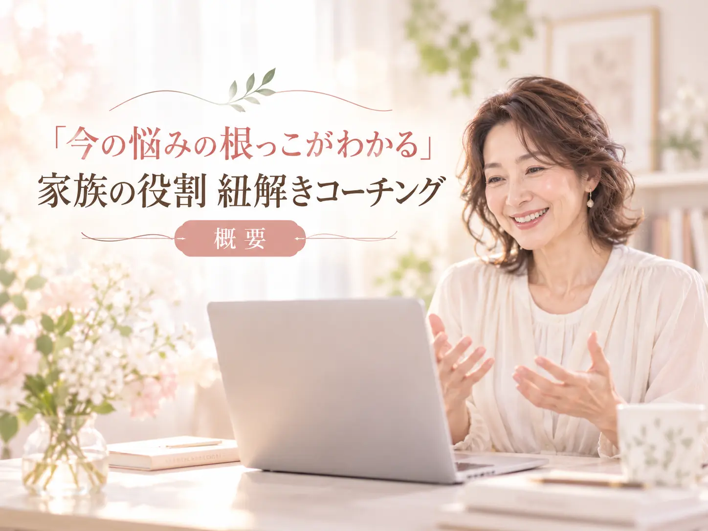
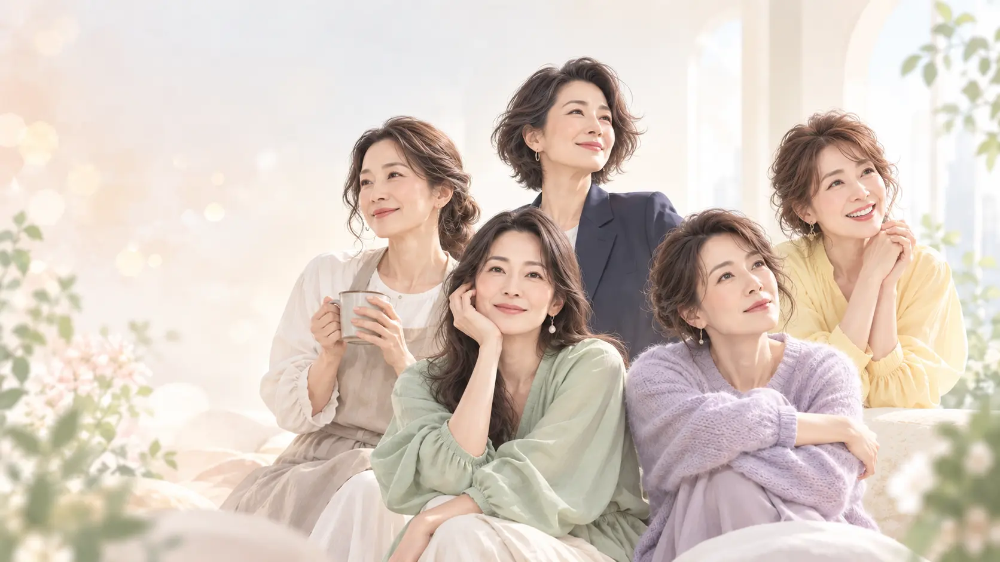

今、一番困っていることを「可視化」する
まずはじめに、あなたが今困っていることを丁寧に伺います。
親子関係、夫婦関係、人間関係、自信のなさ。これからの仕事や生き方。
「いろいろありすぎて、何から話したらいいかわからない」ということでも大丈夫。お話を伺いながら、今、一番整理するとよいテーマは何なのかを一緒に見つけていきます。

「役割から読み解くミニ講座」を最後までご覧いただき、ありがとうございました。
講座を見ながら、
そんなふうに感じた方もいらっしゃるかもしれません。
そして、「では、私の場合はどうなんだろう？」と思われたのではないでしょうか。
実際に役割について知ることと、あなたの人生の中で、その役割がどう働いているのかを理解することは、少し違います。

もしかするとあなたは、これまで、心理学を学んだり、カウンセリングやコーチングを受けたり、本や動画を見たり、講座や資格に何十万円、あるいはそれ以上を自己投資してきたかもしれません。
人の心については、以前よりずっと詳しくなった。
それでも、
そんなこと、ないでしょうか。

学んでも学んでも、自信が持てない。
答えを探しても、また次の答えを探してしまう。
そんなときに必要なのは、さらに新しい知識を足すことではなく、これまで学んできたことと、自分自身の人生をつなぐこと。
ミニ講座では、家族の中で身につけた「役割」が、その後の人間関係や生き方にも影響することをお伝えしました。
とはいえ、同じ役割を持っていても、現れ方は一人ひとり違います。
たとえば、子どもの頃に
「迷惑をかけないようにしよう」
「ちゃんとしていよう」
「家族の役に立とう」
と頑張ってきたとします。
そのとき身につけたやり方が、大人になった今も、
「人を優先してしまう」
「断れない」
「自分に自信が持てない」
といった形で残っていることがあります。
つまり、今の悩みと、子どもの頃の役割はつながっている可能性がある、ということです。
だから、
「私の場合は、どうつながっているのか」
自分の人生とつなげて、理解することがとても大切です。

そのつながりを一緒に見つけていく時間は、このような流れで進みます。
まずはじめに、あなたが今困っていることを丁寧に伺います。
親子関係、夫婦関係、人間関係、自信のなさ。これからの仕事や生き方。
「いろいろありすぎて、何から話したらいいかわからない」ということでも大丈夫。お話を伺いながら、今、一番整理するとよいテーマは何なのかを一緒に見つけていきます。
今起きていることと、家族の中で身につけた役割や、そこから生まれた思い込み、人との関わり方、感情への反応などの「つながり」を見ていきます。
たとえば、「私は意思が弱い」と思っていたことが、実は、「自分の気持ちより、周りを優先することを長く続けてきた」結果だったと気づくこともあります。
現在の状況を可視化し、無意識に働いている家族連鎖や役割などの根本要因を特定する流れを大切にしています。
ここが、特に大切なところです。たとえば、
子どもの頃「親を心配させないように頑張った」
身につけた反応「人に頼らず、自分で何とかする」
現在「一人で抱え込んで疲れてしまう」
というようなことがないか、過去と現在を一本の線につなげていきます。
すると、「どうして私はこうなんだろう」という状態から、「こういう理由があって、この反応を身につけたのかもしれない」と、自分を見る視点が変わっていく方が多いです。
最後に、「では、私はこれから何をすればいいのか」を一緒に整理します。たとえば、
など、今のあなたに必要なことを1〜3つに絞ります。「やること」と「今はやらなくていいこと」を整理して、日常で実践できる形で持ち帰っていただきます。

この「家族の役割 紐解きコーチング」は、ただ話して、「少しすっきりしました」で終わる時間にはしません。
90分の最後には、
が整理されて、「私は、ここから取り組めばいい」という状態を目指しています。

もしあなたが、これまで心理学やコーチングを学んできて、いつか、コーチやカウンセラー、セラピストとして、自分の経験を人の役に立てたいと思っているなら。
自分自身の「役割」や家族連鎖を整理することには、とても大きな意味があります。
なぜなら、人を支援するとき、まずは自分の内が整って、安心感があるかどうかがもっとも大切になるからです。
家族のこと、人間関係、自信のなさ。
悩みの形は違っても、自分では見えにくかったつながりが整理されることで、少しずつ現実が動き始める方がいます。

心理学やカウンセリングを学んでも、一時的に楽になるだけで、また元に戻ってしまう自分に悩んでいました。
人にどう思われるかも気になって、以前はカウンセラーとして活動しながらも、「自分は人の役に立てない」と自信を失って動けなくなってしまいました。
でも、セッションを重ねる中で、自分を下げずに人と関われるようになり、「無理しなくていい。人のために繕わなくていい」と思えるようになったのです。
今は、「自分が変われたから、人は変われると思えた。もう一度カウンセリングの仕事をしたい」と思えるようになり、自分のペースで動き出せました。

仕事、友人関係、子育てなど、何を選んでも自信が持てず、「自分にはできない」「人に迷惑をかける」という思いを抱えていました。
でも、何が原因なのかを整理し、今取り組むことが見えてきたことで、行動することへの怖さが減り、夫や子どもとの関係にも変化が起きてきました。

夫との関係や、これからの自立について、何をどう整理すればいいのかわからず悩んでいました。
転機となったのはセッションを続ける中で、「相手からもらおうとしていたものは、自分が自分に与えてもいい」と思えるようになったことでした。
少しずつ自分に意識を向けられるようになり、自分の幸せを一番に考えていいと思えるようになり、子どもに怒ることも減りました。
いつも疎外感や孤独感があり、周囲に合わせて、自分を出せずにいました。「このままずっと、ひとりで頑張るしかないのかな」子どもの頃から、そんな感覚も続いていました。
そして、子どもの頃の気持ちと向き合う中で、「ひとりじゃない」という感覚を持てるようになり、人との会話が増え、助けてくれる人や、愛してくれる人がいることを実感できるようになりました。
今も、胸の中に、あたたかい気持ちが広がっています。
※ご紹介しているのは実際のご感想をもとに、読みやすいよう一部を抜粋・整理したものです。変化には個人差があります。写真はイメージです。

家族連鎖クリア＆ライフコーチ
2002年から、コーチング・心理支援に携わり、これまで国内外の多くの方の親子関係、夫婦関係、子育て、自己不信、生きづらさ、そして、コーチ・カウンセラー・セラピストとして人を支援していきたい方のご相談を伺ってきました。
相談実績 2万件以上
コーチングに加えて、交流分析、NLP、アドラー心理学、家族療法などを学び、「今起きている問題」だけを見るのではなく、その背景にある家族との関係や役割、長く身につけてきた反応を一緒に整理することを大切にしています。
また、コーチ・カウンセラー・セラピストの起業支援にも携わってきました。
そのため、「自分自身の問題を整理したい」ということと、「いつか、自分の経験を人のために生かしたい」ということの両方を含めてお話を伺うことができます。

この時間では行わないこと、あらかじめお伝えしておきます。中には、あえてお伝えするまでもないこともありますが、初めての方でも安心してご参加いただけるようにと思っています。
上記のことは「いたしません」。
あなたのペースやお気持ちを大切にしながら、今の状況を一緒に整理し、必要なことを丁寧に見ていきます。
そして、90分ですべてを解決することもお約束しません。なぜなら、家族の中で何十年もかけて身につけてきたものを、90分ですべて変えることは現実的ではないからです。
だからこそ、この90分で目指すのは、「全部解決すること」ではなく、
「どこから解いていけばいいのかを明確にすること」
これ以上、答えを探し続けなくていいように。あなたに必要な方向を一緒に整理いたします。

継続して取り組むことがお役に立ちそうな場合には、ご希望があればその後のサポート方法をご案内します。その場合でも無理におすすめすることはありません。



それは、過去のあなたが家族の中で生きていくために身につけた方法でもあります。だから、役割をなくすことがゴールではありません。
大切なのは、「いつものパターンを無意識に選んでしまう」から、「今の自分に合う選択」へと変わること。
60分の講座を見て、「私にもつながっている気がする」「もう少し、自分の場合を知りたい」と思ったなら、今度は一般的な話ではなく、あなた自身のことを、一緒に整理してみませんか。
答えを探し続ける人生から、
答えを、自分の人生で使う人生へ。
毎月5名様まで。受付枠が埋まり次第終了します。